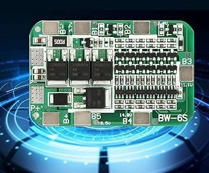
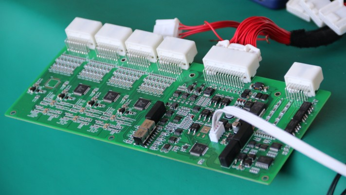
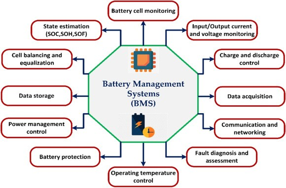
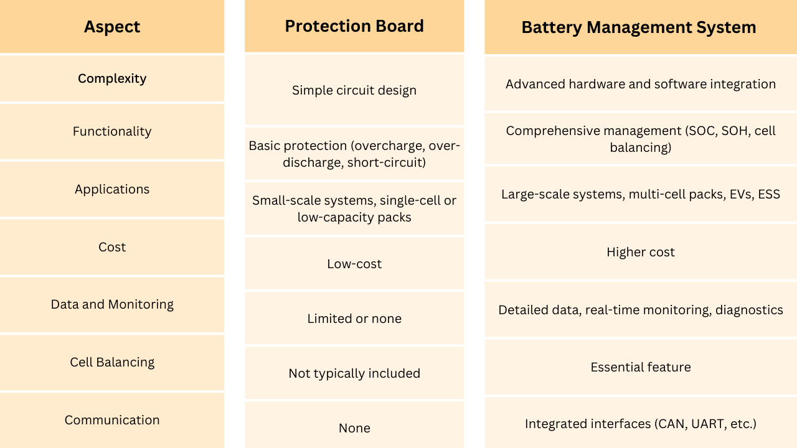
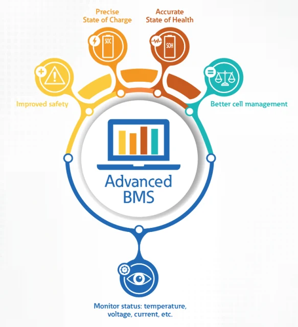

As the world shifts toward sustainable energy solutions, batteries have become indispensable in powering everything from electric vehicles (EVs) to renewable energy storage systems. Central to the efficient and safe operation of batteries are mechanisms that protect and manage their performance.
Among these, Protection Boards and Battery Management Systems (BMS) play critical roles. Although they serve overlapping purposes, their functionalities, applications, and complexities differ significantly. This article delves into the distinctions between Protection Boards and BMS, providing a comprehensive understanding of their roles in battery protection and management.
What is a Protection Board?
A Protection Board is a relatively simple electronic circuit designed to safeguard a battery pack from common electrical issues. Its primary purpose is to ensure the safety and longevity of the battery by preventing:
- Overcharging: Excessive voltage can damage battery cells, reducing their lifespan and potentially causing safety hazards.
- Over-discharging: Discharging a battery below its safe voltage limit can lead to irreversible damage to the cells.
- Short-circuiting: This can cause excessive current flow, leading to overheating, fire, or even explosion.

Key Features of Protection Boards:
- Voltage Monitoring: Ensures that the voltage of individual cells or the entire pack remains within safe limits.
- Current Limiting: Protects the battery pack by restricting the current to a predefined maximum value.
- Thermal Protection: Some advanced protection boards include temperature sensors to shut down the circuit if overheating occurs.
- Cost-Effective: They are relatively inexpensive and are widely used in small-scale applications such as consumer electronics and single-cell batteries.
However, Protection Boards lack the sophistication to provide detailed insights into the battery’s health or manage its performance under varying conditions.
What is a Battery Management System (BMS)?
A Battery Management System (BMS) is a more advanced and comprehensive solution for battery protection and management. Beyond safeguarding the battery, a BMS optimizes its performance, enhances its lifespan, and provides real-time data on its status.

Key Functions of a BMS:
- Cell Balancing: Ensures uniform charging and discharging of all cells in a battery pack, which is crucial for maintaining the pack’s capacity and longevity.
- State of Charge (SOC) Estimation: Calculates the remaining capacity of the battery to inform users about the available energy.
- State of Health (SOH) Monitoring: Assesses the overall condition and performance of the battery over time.
- Thermal Management: Actively monitors and manages the temperature of the battery pack to prevent overheating and ensure optimal performance.
- Communication Interface: Provides data to external systems, enabling integration with devices such as EV controllers or renewable energy inverters.
- Fault Detection and Diagnosis: Identifies potential issues like cell imbalances, high internal resistance, or abnormal temperature changes and takes corrective actions.

Applications of BMS:
- Electric Vehicles (EVs)
- Energy Storage Systems (ESS)
- Industrial and Commercial Battery Solutions
- High-performance consumer electronics
Differences Between Protection Boards and BMS

Choosing Between Protection Boards and BMS
The choice between a Protection Board and a BMS depends on the application and the specific requirements of the battery system:
- For Simple Applications: Devices like power banks, flashlights, and small drones can often function adequately with a Protection Board due to their lower energy demands and less complex battery configurations.
- For Complex Systems: Applications such as EVs, renewable energy storage, and industrial systems require a BMS to ensure optimal performance, safety, and longevity. The advanced features of a BMS, such as thermal management and communication interfaces, are indispensable in these scenarios.
Advancements in Battery Protection and Management
With the rapid evolution of battery technology, the lines between Protection Boards and BMS are becoming increasingly blurred. Modern protection solutions are incorporating more advanced features, while BMS is becoming more compact and cost-effective. Innovations such as artificial intelligence (AI) and machine learning (ML) are being integrated into BMS to predict battery performance and preemptively address potential issues.

Conclusion
While Protection Boards and BMS both play vital roles in battery protection, their functionalities and applications differ significantly. Understanding these differences is crucial for selecting the right solution for a given application. As battery technology continues to advance, the role of intelligent and integrated systems like BMS will become even more critical in enabling the safe and efficient use of batteries across diverse industries. Whether it’s for a simple device or a sophisticated energy storage solution, the right choice ensures safety, efficiency, and longevity for your battery systems.